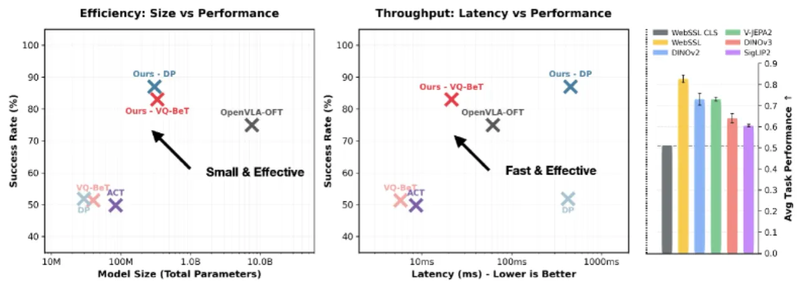
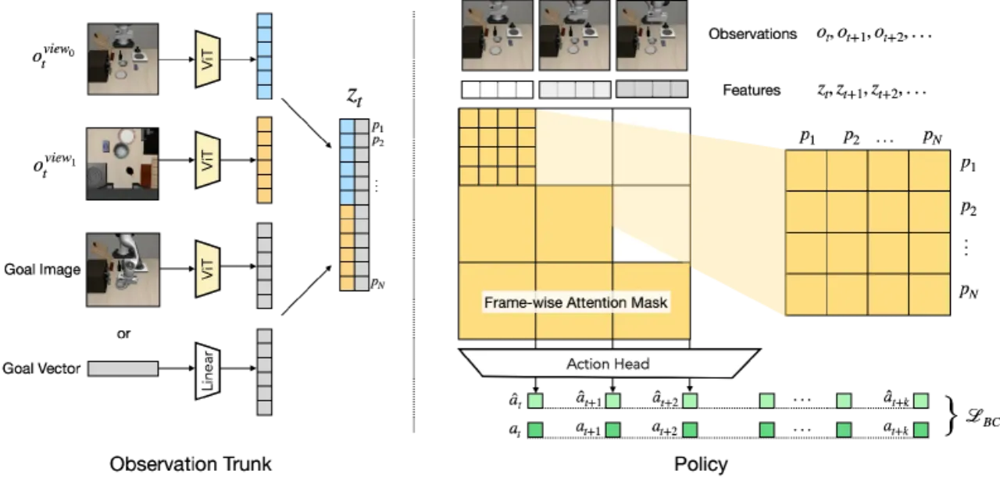
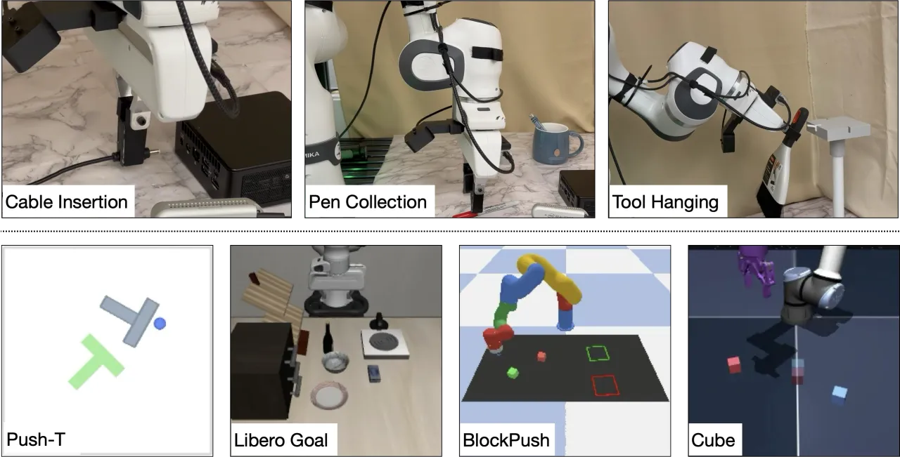
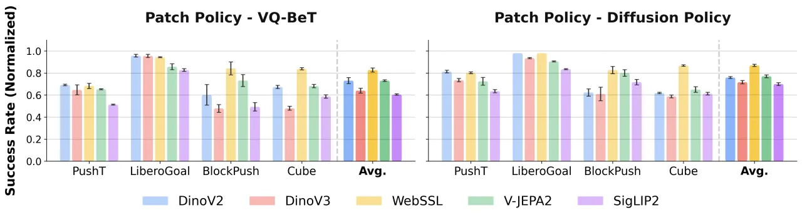

预训练 ViT 的 dense patch features 很强，却在机器人学习里被浪费了：主流策略要么把每帧压成一个 global token（丢掉精细空间细节），要么背上十亿参数 VLM 的全部开销。Patch Policy 用一个极简的架构扩展，让 transformer 策略直接消费冻结 ViT 的 dense patch tokens——核心是一个 block-causal attention mask，在保留时间因果的同时让模型跨大量 patch token 做注意力。轻量、快速、有效。
当代机器人策略被困在两种次优范式里。其一，把观测压成 ResNet pooled feature 或 ViT CLS token 的单个 global 向量，形成一个严重的信息瓶颈——「aggressive spatial compression destroys the fine-grained, local details necessary for precise manipulation」。其二，直接 fine-tune 庞大的 vision-language-action（VLA）模型，虽然用上了 dense patch features，却「training and inference remain quite expensive overall」，继承了十亿参数 VLM 的全部成本。
“Can we inherit the representational gains of large-scale vision pretraining, without inheriting the cost of billion-parameter generative models?”
Patch Policy 给出的答案是：不需要大模型，关键在于直接访问冻结的、互联网预训练 backbone 的 dense patch features——「what matters is not scale but direct access to dense patch features from a frozen, Internet-pretrained backbone.」

Patch Policy 是一个基于 transformer 的策略，直接摄入 ViT 未经压缩的 dense patch features。给定图像观测 ot ∈ ℝC×H×W，一个冻结的 ViT encoder 抽出形状为 P×D 的 patch features（patch 数 × patch embedding 维度）；在长度为 T 的上下文窗口下堆成 T×P×D，展平为长度 T×P 的序列并加上 learned 1D positional embeddings，送入 transformer policy trunk 与 action head。

这是让 dense patch 与时间因果性共存的关键设计：「Patches maintain full bidirectional attention intra-frame but are causally masked inter-frame, allowing the model to integrate spatial information across each frame while preserving temporal causality.」即——帧内 patch 之间双向全注意力（充分整合空间信息），帧与帧之间因果遮罩（当前帧不能看到未来帧），从而在吃下每帧大量 patch token 与其它 state 信息的同时，保持标准策略的时间因果结构。
视觉 backbone 在训练中全程冻结，作者系统对比了五种 SOTA 表征：DINOv2、DINOv3、WebSSL、V-JEPA 2、SigLIP 2。真实机器人实验统一采用紧凑而表现顶尖的 DINOv2 ViT-S/14。
Patch Policy 只是一个架构扩展，可直接搭配现成的策略头：论文验证了 VQ-BeT（vector-quantized behavior transformer，分类-回归混合目标）与 Diffusion Policy（去噪目标）。训练时把一段 patch token 序列前向过 policy trunk 与 action head，对每一帧计算预测动作与 ground-truth 动作之间的损失。
评测覆盖 四个仿真套件（Push-T、LIBERO Goal、BlockPush、Cube）与 三个真实世界任务（Cable Insertion，约 2 mm 插入公差；Pen Collection，多物体 + 位姿变化；Tool Hanging）；此外在 CAP-EgoGym 上用 5000 episodes、在多样背景纹理与物体上评测 pick / open / close。基线包括使用 SOTA global-pooled 表征的策略与 fine-tuned OpenVLA-OFT。

Patch Policy 在全部四个仿真环境上都超过同时融合 DINOv2 与 SigLIP 特征的 fine-tuned OpenVLA-OFT，「confirming that dense spatial representations are vital for complex manipulation tasks」；在三个真实任务上也全部胜出，说明「for in-domain task learning, a lightweight policy trained from scratch over frozen dense features can be competitive with a heavy pretrained VLA fine-tuned on the same data.」
把每帧保留的 patch 数逐步降到 1（等价于 global token），性能单调下滑，直接量化了「dense vs. global」的差距：
| 每帧 patch 数 | 256 | 64 | 16 | 4 | 1（global） |
|---|---|---|---|---|---|
| Push-T success | 0.69 | 0.52 | 0.53 | 0.51 | 0.48 |
| 任务 | Cable Insertion | Pen Collection （第 3 支笔放置） | Tool Hanging （工具挂上） |
|---|---|---|---|
| Final success | 0.70 | 0.85 | 0.90 |

此外，attention mask ablation（Table 12，Push-T 与 Cube）对比了 block-causal / full attention / token-causal 三种遮罩，支撑了 block-causal 的选择。
「we focused exclusively on frozen vision backbones, and future work could explore end-to-end fine-tuning to adapt these representations for specialized visual domains.」——未做端到端微调，特化视觉域上仍有提升空间。
「dense tokens increase sequence length and training time. Optimizations like FlashAttention could accelerate both training and inference.」——序列变长带来开销，可用 FlashAttention 等优化加速。
「Patch Policy is currently evaluated purely as a behavior cloning policy. Extending this patch-based architecture to reinforcement learning could be a promising direction to surpass the performance ceiling of static expert demonstrations.」——尚未结合 RL，扩展到 RL 有望突破静态专家演示的性能上限。